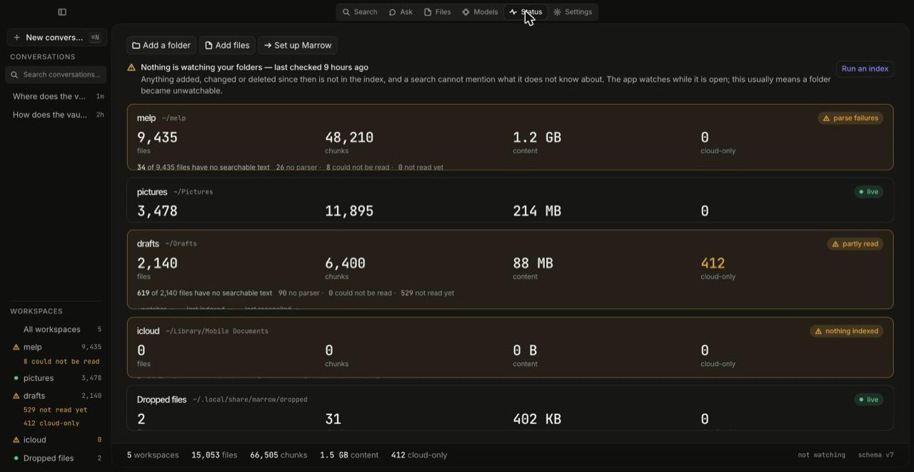

Guides / Index your first folder
Guide 1
Nothing here needs a model, a GPU or a network connection. Ten minutes, and at the end you have a searchable, citable index of one folder.
Pick the folder deliberately. Marrow indexes what you tell it to and nothing else — but what it indexes is what an agent wired to it can read. Start with one project directory rather than your whole home folder.
A granted folder is called a workspace. Nothing outside one is ever read.
marrow workspace add ~/Projects marrow workspace add ~/Documents/Contracts --name contracts marrow workspace list
The name defaults to the folder's own name; --name
overrides it. In the desktop app the same thing is
Add a folder on the Status screen, which opens a
native picker — the folder chooser runs in Rust, and the window itself
has no filesystem affordance at all.
# Every workspace: marrow index # Or just one, by name: marrow index contracts # Honour .gitignore for this run: marrow index --gitignore
--gitignore is per-run and off by default, because the
files a repository ignores are often exactly the ones you later want
to find.
A run walks the folder, works out for each file whether it is really on this disk, hashes it, records it, then parses and chunks it. One file never ends a run. Recording a file is required; parsing it is optional, and a file that fails to parse lands in the outcome's failure list with its error code rather than being swallowed. Kill the process half-way and run it again — jobs are idempotent and resumable.
marrow status
There are two counts here and conflating them is the most common way to misread Marrow:
On a photo-heavy folder the second number is a small fraction of the first, and that is the expected state, not a fault. The breakdown says why, and its three parts add up: no parser (photos, binaries, empty files — not a failure and not fixable), parse failed (the only one worth acting on), and not processed yet (another index run clears it). Cloud-only files are counted separately and are never opened.

pictures card
has thousands of files with no searchable text and is still healthy;
the melp card has eight files a parser could not finish
and says so. Rendered against the repository's development fixtures.
marrow search "auth refresh token" # Narrow it: marrow search --type rs --since 7d "admission" marrow search --path crates/model --workspace melp "breaker" marrow search --until 2026-01-31 -n 50 "invoice" # Why did these rank this way? marrow search --explain "admission control"
--since and --until take a calendar date
(2026-01-31, read as UTC) or a span counted back from now
(7d, 3w, 6m, 2y).
A workspace name that matches nothing is an error, not an
empty result — zero hits for a typo reads as "nothing is indexed" and
sends you to debug the wrong thing.
Search tokenises into words, so });,
TODO(name) or any pattern with punctuation in it is
unfindable through the index. --literal reads the files
themselves instead.
marrow search --literal '});' marrow search --literal --regex -i 'fn\s+refresh_\w+' marrow search --literal -w --time-limit 30 TODO
It is slower, it only sees files that are on this disk, and it says
how many it skipped and why. --regex,
-i/--ignore-case, -w/--whole-word and
--time-limit only apply with --literal; the
CLI refuses the combination otherwise rather than ignoring the flag.
marrow watch marrow watch contracts
Runs until you interrupt it. Watchers miss events — by design of the operating system. They are hints; reconciliation is what makes the index correct, and both watchers sweep once before they start listening. Watcher health is reported on start and whenever it changes, so a degraded watcher is never silent.
Every surface in Marrow reports its freshness or says it cannot. A stale index answers confidently about a disk it has not looked at, and the counts are true — they are just true about a disk that has moved on.
marrow embed marrow search --semantic "how do I stop a run"
embed needs the embedding model on disk and is resumable —
interrupt it and run it again. --semantic is opt-in
because starting the embedder costs several seconds on every
invocation, and a search you type is one you expect to answer
immediately. When you remember what a document said but not
what it called it, this is what finds it.
Every command takes --json, globally, and
returns the same data as the human view. Also global:
--no-color (and NO_COLOR is honoured), and
-v, repeatable, for narration on stderr. Narration always
goes to stderr so stdout stays a clean pipe.
Exit codes are a contract. Zero results is success, not
an error. A missing index (4), an unreachable network
(6) and an unavailable model (7) are distinct,
so a script that falls back to marrow search can tell a
machine with no model from one where you pressed Ctrl-C
(5).
Next: ask a question and follow the citation → Or: serve this index to an agent →